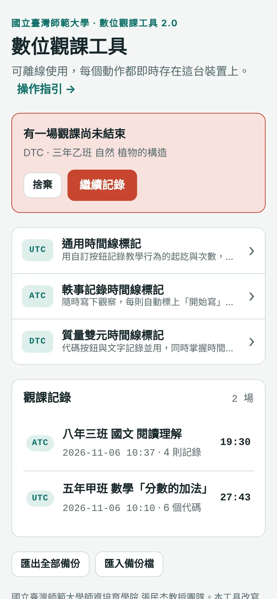
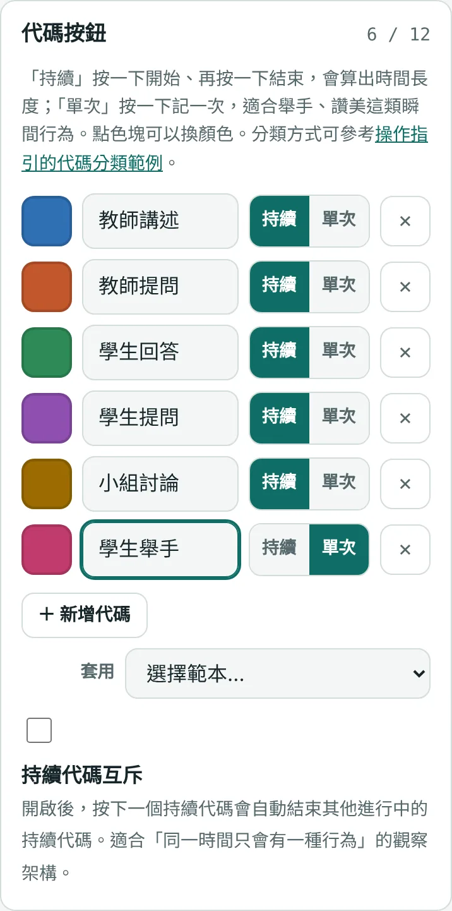
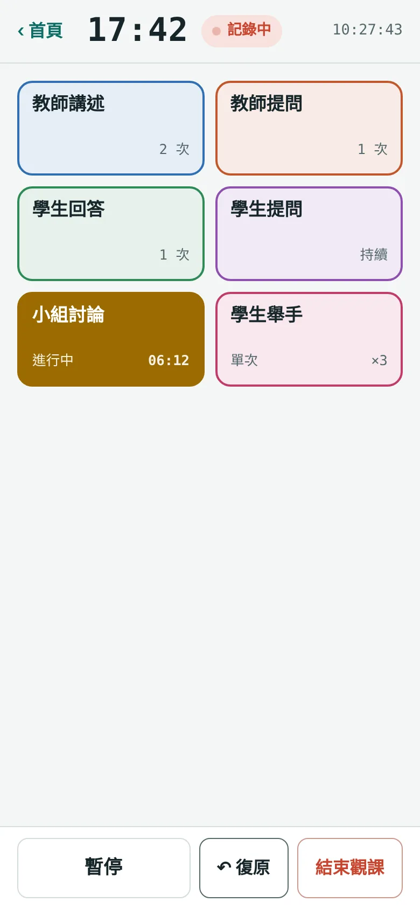
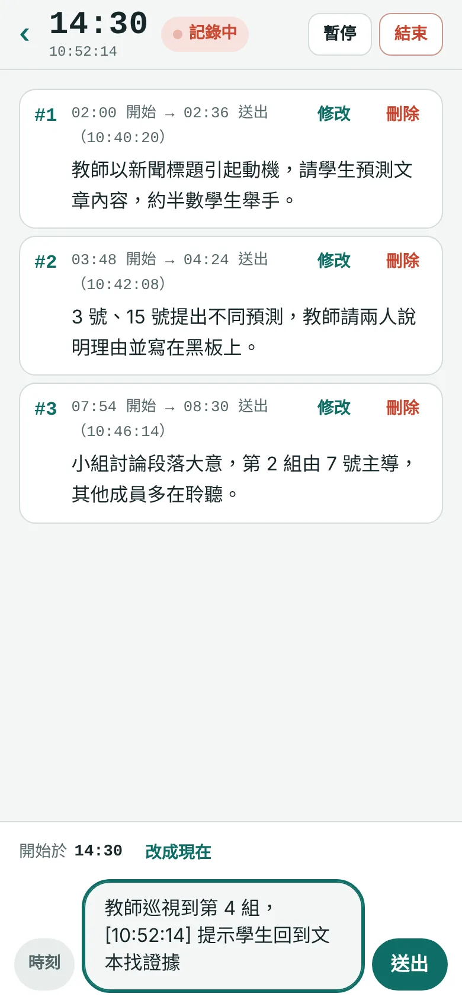
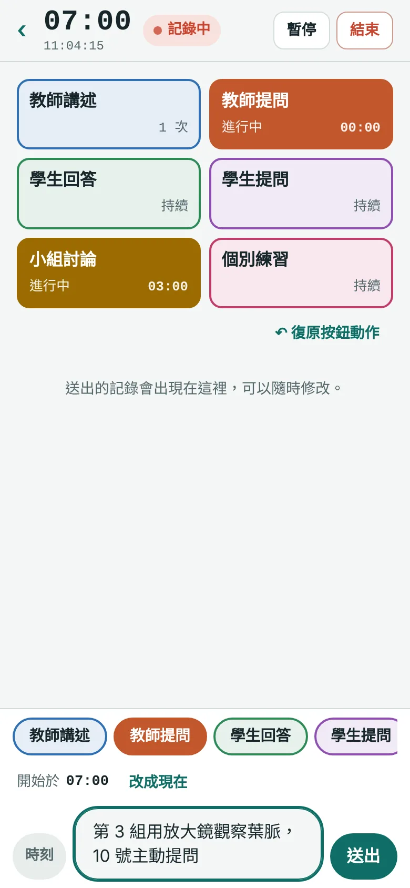
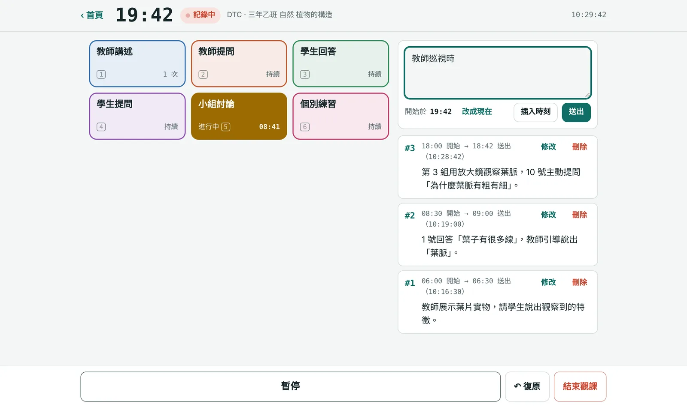
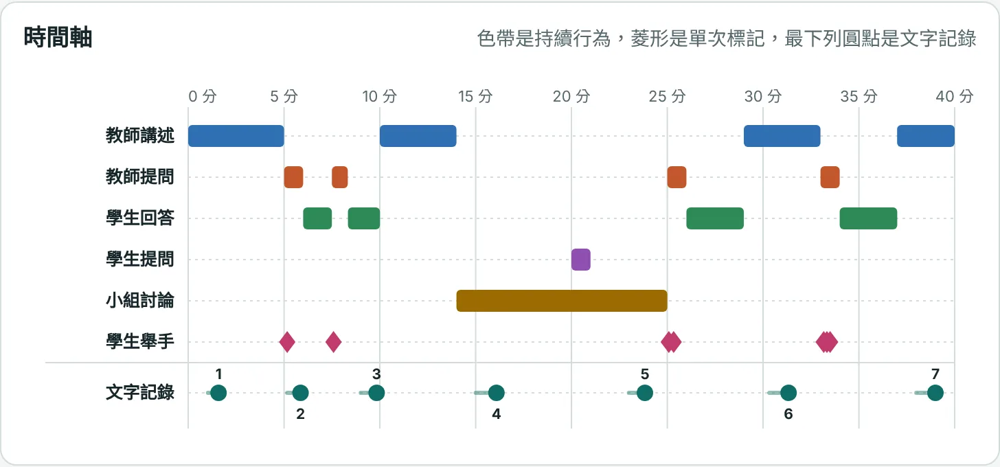
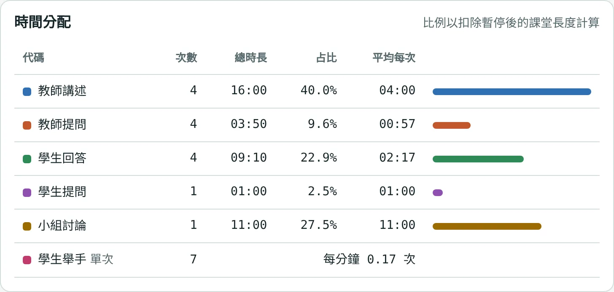
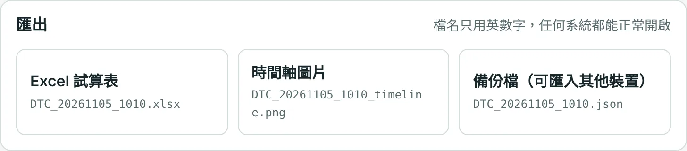

操作指引
UTC 通用時間線標記、ATC 軼事記錄時間線標記、DTC 質量雙元時間線標記
開始之前
- 先知會被觀察者並取得同意。在課堂、會議等場合使用本工具記錄前，請先告知授課教師與學生。
- 學生以座號或代稱記錄，不寫全名。觀課記錄常含學生資訊，屬個人資料。
- 記錄存在你的裝置上。每按一次按鈕、每送出一段文字都會立即保存，誤按重新整理或手機切到背景也不會遺失。但換手機、清除瀏覽器資料就會不見，重要的記錄請匯出保存。
- 不要用無痕模式。無痕模式關閉後資料會被清除，首頁也會出現提醒。
- 建議安裝到主畫面。安裝後可以離線開啟，像 APP 一樣使用：
- Android（Chrome）：開啟網址 → 右上角選單 →「安裝應用程式」或「加到主畫面」。
- iPhone／iPad（Safari）：開啟網址 → 下方「分享」→「加入主畫面」。
- 電腦（Chrome、Edge）：網址列右側的「安裝」圖示。
三種工具怎麼選
依觀察焦點把課堂中看到、聽到的事實分類，用按鈕標記起訖時間。適合想知道「各種行為占多少時間、出現幾次」，例如教師講述與學生討論的比例。
依時間順序簡要記錄教室裡發生的事件，每則自動標上時間。適合質性觀察，例如某位學生的學習歷程、師生互動的細節。
結合前兩者：一邊按按鈕標記行為，一邊寫文字記錄。因為兩件事同時進行，文字建議簡短摘述，才不會漏掉課堂中的標記。
共同流程
- 首頁選擇工具。未結束的觀課會顯示在最上方，可以「繼續記錄」或「捨棄」。
- 填觀課資訊（標題、日期、班級、授課教師等，都可留白之後再補），UTC、DTC 還要設定代碼按鈕。
- 進入記錄畫面，上課開始時按「開始計時」。
- 課堂中記錄；需要中斷可按「暫停」，暫停期間不計入課堂時間。
- 按「結束觀課」，進入結果頁查看時間軸、修改記錄、匯出檔案。

記錄畫面上方隨時顯示兩個時間：大字是課堂經過時間（扣除暫停），小字是現在時刻。中途才進教室的觀課者，可以用現在時刻和其他人的記錄對照。
UTC 代碼計時
設定代碼按鈕
- 可設 1 到 12 個按鈕。手機直式建議 8 個以內，超過時畫面需要捲動。
- 每個按鈕可選兩種記錄方式：
- 持續：按一下開始、再按一下結束，會算出時間長度。例如教師講述、小組討論。
- 單次：按一下記一次，只記次數與時間點。例如學生舉手、教師讚美。
- 點左側色塊可換顏色；「套用」選單有現成的分類範本，參考代碼分類範例。
- 持續代碼互斥：開啟後，按下一個持續代碼會自動結束其他進行中的持續代碼。適合佛蘭德斯互動分析這類「同一時間只有一種行為」的架構。
- 按鈕設定會自動記住，下次開新的觀課時沿用。

記錄
- 持續代碼進行中時，按鈕會變成實心並顯示這一段已經多久；單次代碼右下角顯示累計次數。
- 按錯了就按「↶ 復原」，撤回最近一次的按鈕動作。互斥模式下自動結束的代碼也會一起恢復。
- 暫停時，進行中的代碼會保持進行中，只是不計時；按「繼續」後接著算。
- 電腦上可以用數字鍵 1～0 操作前 10 個按鈕。

ATC 軼事記錄
操作方式
- 開始打字的那一刻會自動記下「開始記錄時間」，不用先按任何按鈕；按「送出」或 Enter 時記下「送出時間」。
- 如果打了字但隔一陣子才繼續寫，可以按「改成現在」，把開始時間更新為現在。
- 「時刻」按鈕（電腦用 Ctrl + ;）會在文字中插入現在時刻，例如 [10:52:14]，方便標記一則記錄中的轉折點。
- 要換行請按 Shift + Enter。使用注音等輸入法選字時按 Enter 不會誤送出。
- 送出的記錄可以隨時「修改」或「刪除」，結束觀課後也可以在結果頁修改。
- 手機上的輸入列固定在畫面底部，鍵盤跳出時會跟著上移，像傳訊息一樣使用。

軼事記錄要怎麼記
- 記重要、有意義、值得記的：依觀察焦點要記的行為或事件。
- 記好奇、感興趣、會關注的：現場觀察中值得注意的行為或事件。
- 記來得及記的：來不及就用縮寫、關鍵詞；盡量客觀描述事實，減少價值判斷用語。
- 可以記錄先前行為、主要行為、行為結果，或用人、事、時、地、如何（5W）的元素來記。「為什麼」屬於記錄後的分析與詮釋，必要時用括號附註。
- 盡量寫成有前因、後果與脈絡的完整片段，避免變成流水帳或零散記錄。
DTC 質量雙元
- 代碼按鈕的設定與 UTC 相同，文字記錄的方式與 ATC 相同；兩者的按鈕設定分開記憶。
- 復原只撤回按鈕動作，不會刪掉已送出的文字；文字請用「刪除」。
- 手機：按鈕在上、輸入列在下。打字時輸入列上方會出現一排可左右滑動的代碼小按鈕，點了鍵盤不會收起，可以邊打字邊標記。
- 平板橫放、電腦：左邊按鈕、右邊文字。打字時用 Alt + 數字鍵（Mac 為 Option + 數字鍵）操作按鈕，不必離開文字框。
- 按鈕建議 6 個以內，手機上文字框才不會被擠到太下面。


結果與匯出
時間軸
色帶是持續行為，菱形是單次標記；ATC、DTC 最下列的圓點是文字記錄的送出時間，前方淡色線段是撰寫期間，數字對應記錄編號。在電腦上把滑鼠移到色帶或圓點上可看到詳細時間與內容。

時間分配與明細
「時間分配」列出每個代碼的次數、總時長、占全課比例與平均每次長度；比例以扣除暫停後的課堂長度計算。展開「記錄明細」可以刪除誤按的標記，結果會立即重算。

匯出
檔名只用英數字（例如 DTC_20261106_1010.xlsx），在任何系統都能正常開啟。中文標題寫在檔案內容裡。

| 檔案 | 內容 |
|---|---|
| Excel 試算表 |
觀課資訊：標題、日期、開始與結束時刻、課堂長度等。 統計（UTC、DTC）：各代碼次數、總時長、占比、平均每次、每分鐘次數。 明細（UTC、DTC）：每一筆標記的開始、結束、長度，含課堂時間與時鐘時刻。 舊版格式（UTC、DTC）：與 1.x 版相同的 start／stop 秒數欄位，原本的分析流程可直接沿用。 文字記錄（ATC、DTC）：序數、開始記錄時間、送出時間、記錄文字與時鐘時刻；DTC 另有「撰寫期間進行中的代碼」，可做質量交叉分析。 |
| 時間軸圖片 | PNG 圖檔，白底，含標題與日期，可直接貼進議課簡報或報告。 |
| 備份檔 | JSON 格式的完整記錄。可在另一台裝置的首頁「匯入備份檔」，繼續查看與匯出。首頁的「匯出全部備份」可一次備份所有觀課。 |
代碼分類範例
以下分類取自原版使用說明與「100 道焦點問題」。標示「範本」的可在 UTC、DTC 設定頁的「套用」選單直接載入，再依需要修改名稱。
佛蘭德斯互動分析（FIAC）範本
套用時會自動開啟「持續代碼互斥」。
| 代碼 | 操作型定義 |
|---|---|
| 接納感受 | 以不具威脅性的方式，接納及澄清學生的態度或情感語氣。 |
| 稱讚鼓勵 | 稱讚或鼓勵學生的動作或行為，包括點頭、說「嗯」「繼續」。 |
| 採納學生想法 | 澄清、擴大或發展學生提出的意見或想法。 |
| 教師提問 | 以教師的意見或想法為基礎，詢問學生有關內容或步驟的問題。 |
| 講述 | 就內容或步驟提供事實或見解，表達教師自己的觀念。 |
| 給予指示 | 指示、指令或命令，期望學生服從。 |
| 批評或維護權威 | 企圖改變學生行為的陳述、責罵學生、說明教師為何這樣做。 |
| 學生被動發言 | 學生回應教師的話，表達受到限制。 |
| 學生主動發言 | 學生主動開啟對話、表達想法、引起新話題。 |
| 停頓、沉默或混亂 | 暫時停頓、短時間安靜或混亂，觀察者無法瞭解師生溝通。 |
教學情境＋個別學生行為範本
| 代碼 | 說明 |
|---|---|
| GI-1 單向教學 | 教師單向主導的教學，例如講述、說明、示範、看影片。 |
| GI-2 雙向互動 | 師生雙向互動的教學，例如提問、團體討論。 |
| GA 分組活動 | 分組實驗、小組討論、分站學習、小組發表。 |
| IL 個別學習 | 個人閱讀或練習、自主學習。 |
| I 積極主動 | 主動提問、主動回答或參與討論、主動做筆記。 |
| E 被動努力 | 依指令完成任務、專注聆聽、針對提問回答。 |
| N 不專心 | 需經提醒才進行任務、無法回應提問、做與學習無關的動作。 |
| D 干擾行為 | 未經允許離座、妨礙他人學習、討論無關內容干擾學習。 |
兩位個別學生行為範本
同時觀察 A、B 兩位學生，各有 I 積極主動、E 被動努力、N 不專心、D 干擾四類，共 8 個按鈕。定義同上。
小組討論：依職務的發言範本
組長發言、記錄發言、報告發言、提問員發言、靜默、離題、正題。可把「組長」等職務改成學生座號或代號。
其他參考
- 小組合作型態：想法交流、相互幫助、協同拼圖、團隊競爭、相關行為、無關行為。
- 延宕反應時間：教師提問後等待時間、學生回答後教師等待時間、教師指令後學生行動時間、上課鈴響到實際上課時間。
- 教師專業發展規準：喚起舊經驗、揭示學習目標、適當的學習或活動、歸納或結論。
- 學生行為次數（適合設為「單次」）：回答問題、提出問題、離開座位、與鄰座交談、玩手機、書寫筆記。
鍵盤快捷鍵（電腦）
| 按鍵 | 功能 | 適用 |
|---|---|---|
| 1～0 | 操作第 1～10 個代碼按鈕（游標不在文字框時） | UTC、DTC |
| Alt + 1～0 | 打字中操作代碼按鈕（Mac 為 Option） | DTC |
| Enter | 送出文字記錄 | ATC、DTC |
| Shift + Enter | 換行 | ATC、DTC |
| Ctrl + ; | 插入現在時刻（Mac 也用 Control） | ATC、DTC |
常見問題
不小心關掉頁面或重新整理，記錄還在嗎？
還在。重新開啟後，首頁最上方會出現「有一場觀課尚未結束」，按「繼續記錄」即可接續，課堂時間也會正確延續。
手機鎖螢幕或切到其他 App，時間會不準嗎？
不會。課堂時間是以實際時鐘計算，回到畫面時會顯示正確時間。記錄中工具會盡量讓螢幕保持開啟。
想在另一台裝置看記錄？
在原裝置的結果頁按「備份檔」，或在首頁按「匯出全部備份」，再到另一台裝置的首頁「匯入備份檔」。
畫面還是舊的版本？
為了能離線使用，工具會把程式存在裝置上。發布新版後，開啟時會在背景下載，並在回到首頁時自動換成新版；若仍看到舊版，關閉頁面後重新開啟即可。
可以給其他教師使用嗎？
可以，分享網址 https://fox122886.github.io/digiobstool/ 即可。每位使用者的記錄只存在自己的裝置上，彼此不會看到。
國立臺灣師範大學師資培育學院 張民杰教授團隊。本工具改寫自 Miikka Turkkila 的 LOBS（Lesson OBServation app），以創用 CC 姓名標示-非商業性-相同方式分享 4.0 釋出。
問題與建議：ntnutdo@gmail.com 電話：02-7749-1228